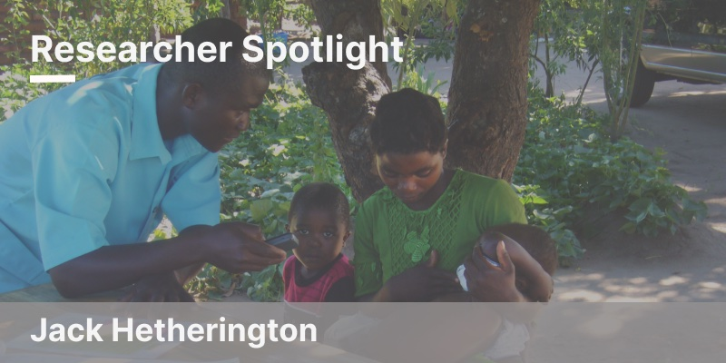
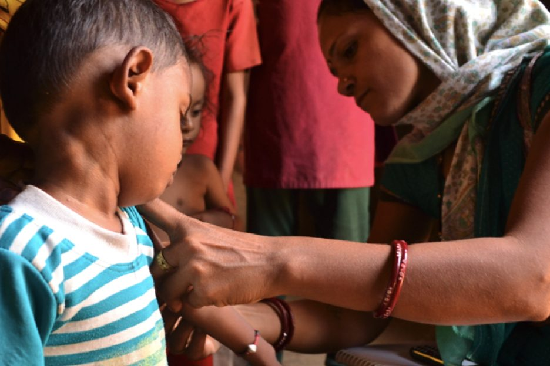
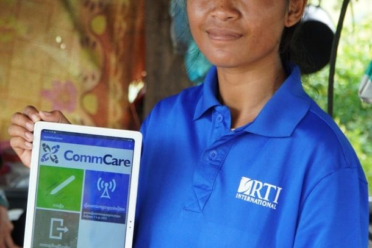
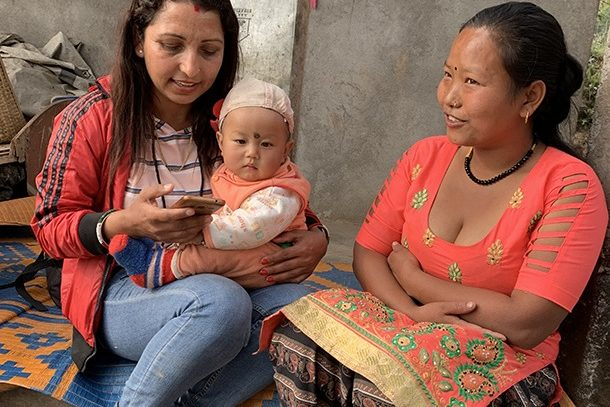
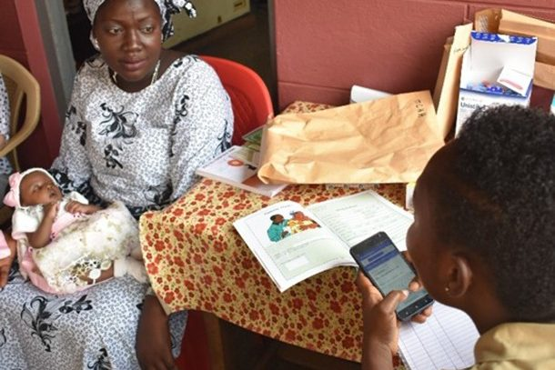
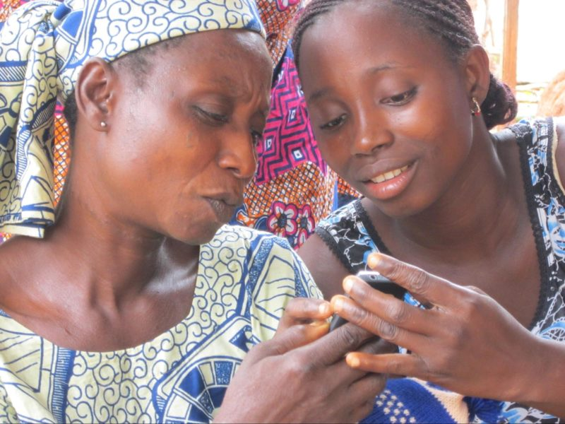
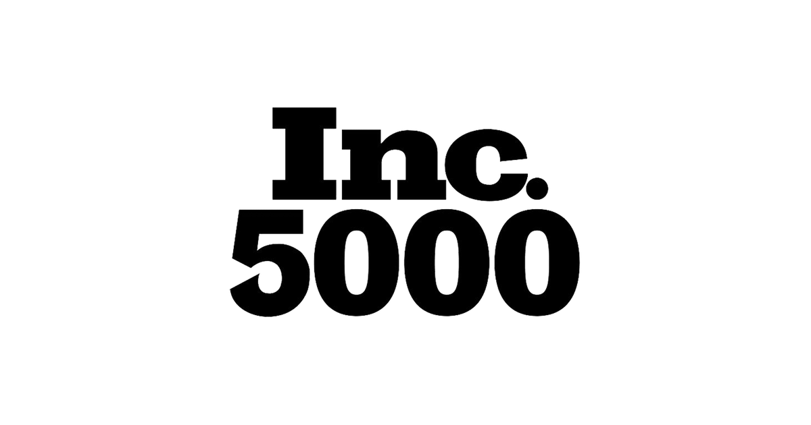
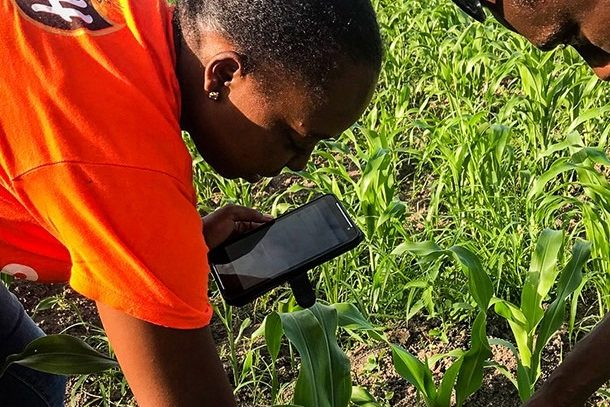
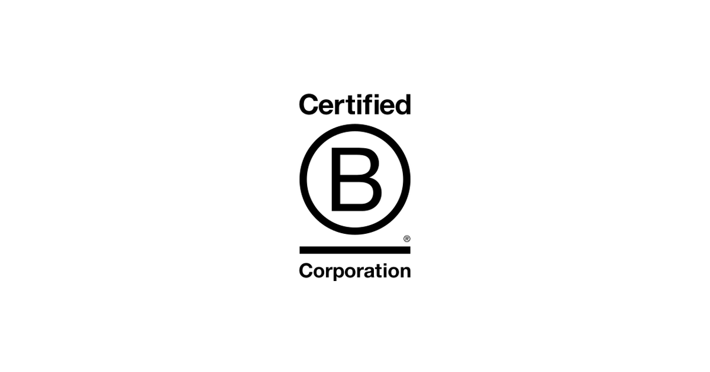

Empowering Public Health Workers in Somerville with Digital Tools
Discover how Somerville's public health workers use CommCare to streamline workflows, improve data sharing, and deliver better care.
Discover how Somerville's public health workers use CommCare to streamline workflows, improve data sharing, and deliver better care.

In partnership with WHO and the Bill & Melinda Gates Foundation, CommCare digitized last-mile worker payments for polio and routine immunization campaigns across 16 countries, cutting payment timelines from months to days and reaching some 2 million frontline health workers.

In September 2024, more than sixty members of our Global Tech Division gathered in Platja d’Aro, Spain for a week of team building, breakout sessions, and reconnecting in person.

GiveWell has awarded Dimagi a grant of more than $1 million to scale service delivery through CommCare Connect and cost-effectively improve essential child health coverage in northern Nigeria.

Explore the work of Tackle (formerly TackleAfrica), an NGO using football to deliver HIV and Sexual & Reproductive Health & Rights information to young people across Africa, and its move from paper to digital data collection through the CommCare Research Grant.

Join Dimagi at the ICT4D Conference 2024 in Accra, Ghana. Sign up for our Advanced CommCare Training and connect with our team on digital development.

One year after launching the first CommCare Grant for Frontline Research, we share insights from first-place winner Move Up Global, whose study in rural Rwanda targets neglected tropical diseases and malnutrition among school-aged children.

Learn more about CommCare's case management capabilities and how Case List Explorer lets you link forms together, track subjects, and analyze changes over time.

Learn more about Dimagi's Solutions Division as Themba Nyirenda shares his experiences and journey as a Senior Technical Project Analyst on the Delivery team.

Learn more about the CommCare Provider Program and the important work it does to support local capacity building and strengthening in low- and middle-income countries.

This Q&A explores a 'day in the life of' Dhivya Sivaramakrishnan a Project Manager on the Delivery team for the India Division at Dimagi.

The Q&A provides insights into the Solutions Delivery team at Dimagi, including A Day in the Life of Wouter Vink, Director of Solutions Delivery, Solutions Division, their consulting role, unique c…

How Colorado's Behavioral Health Administration partnered with Dimagi to build a centralized CommCare registry for medication assisted therapy, so 97% of client admissions no longer require state intervention.

Dimagi’s project, in partnership with Johnson & Johnson, supports three organizations in building resilience among health workers through a digital mental health toolbox to expand access to mental healthcare in low- and middle-income countries and share learnings through a peer-reviewed publication.

Meet Jack Hetherington, to learn about IndoDairy and how to set-up your research project and team for data collection success.

How the LAKANA trial uses CommCare to collect data on roughly 35,000 infants across 1,150 villages in Mali, testing whether mass drug administration of azithromycin reduces childhood mortality.

On Dimagi's 20th anniversary, we reflect on Designing Under the Mango Tree, our user-centric approach of building solutions around users' contextual needs, and revisit conversations with some of the first users of CommCare.

Nick Tarantino, PhD, a psychologist and Assistant Professor at Brown University, discusses his research on HIV treatment-adherence in Ghana as well as his use of gamification through mobile phones,…

Through Dimagi's working group, we share key learnings toward developing a process for adapting, translating, and testing the Resilience Message Program for health workers living in LMICs around the world.

We’re excited to launch the first CommCare Grant for Frontline Research to celebrate and support research teams around the world, who share our commitment to

For the first time in its history, Dimagi has become a pledging organization to the Global Fund, committing USD $5 million in in-kind services to accelerate the national adoption and scale of digital tools.

Dimagi announced a $25 million Program-Related Investment from the Steele Foundation for Hope to fund a next generation digital platform supporting frontline healthcare workers globally.

How Malawi's Ministry of Health and Population replaced paper supervision checklists with a CommCare-based digital integrated supportive supervision tool across all 29 districts.

Exploring Dimagi’s approach to staff enrichment, including investing in continuous learning and expanding skills company-wide, in support of our goal of achieving high-impact growth.

How the USAID-funded ACCESS program in Madagascar equipped 3,500 community health volunteers with an offline-first CommCare app and fed 779 indicators into the Ministry of Public Health's DHIS2.

How RTI International used CommCare to digitize community health worker job aids for Cambodia's Integrated Early Childhood Development Activity, registering more than 5,000 households.

How the USAID-funded Healthy Mother, Healthy Baby Activity used CommCare to digitize maternal and child health services across 12 districts of Tajikistan, feeding data into DHIS2.

Dimagi is committing $3 million and signing an MOU with The Global Fund to provide 50% match funding to countries that leverage Global Fund grants to scale up Dimagi digital tools.

A look back at some of the new CommCare programs Dimagi launched with partners, a selection rather than the full list, spanning community health, agriculture, financial inclusion, and humanitarian response across four regions.

Ten Dimagi team members will be presenting across eleven sessions at the virtual Global Digital Health Forum 2021, spanning open source, COVID-19 response, chatbots, scaling, and more. We hope to see you there.

FIND and Dimagi have partnered to develop a new CommCare template application that guides health workers through running COVID-19 antigen rapid diagnostic tests (RDTs).

Disruptions in routine immunization due to COVID-19 can lead to secondary health crises, especially in children. Dimagi has expanded the platform used to deliver more than 1 million COVID-19 vaccines to include routine immunization.

In the pursuit of universal health coverage, there are many forms of direct-to-client solutions in development, such as mobile apps and chatbots. Dimagi’s Director of Consumer Innovations explains our approach to developing such tools.

Step 4 in Dimagi’s Innovation Lifecycle is determining price sensitivity. Here is how the team used the Van Westendorp Price Sensitivity Meter to find an early signal on willingness to pay.

Terre des hommes partnered with Dimagi to replicate and expand COVID-19 screening, triage, and health-worker training tools, building on a deployment in Jharkhand, India.

Dimagi has signed the Climate Pledge, joining more than 200 businesses committed to achieving net-zero carbon emissions by 2040, a target Dimagi has already reached.

Dimagi has created a Prioritized Tasking Framework that aims to help CHWs focus on service delivery, enable data-driven decision making, and provide patients access to better care.

Dimagi has officially launched its Crisis Response Corps (CRC): a team dedicated to rapidly building durable digital solutions for immediate impact in emergency and humanitarian response.

Dimagi has partnered with PATH and Digital Square to create a turnkey integration between CommCare and Fast Healthcare Interoperability Resources (FHIR), making it easier to share health data securely across systems.

After a seven-year run from 2011 to 2018, Dimagi was once again named to the Inc. 5000 List of the fastest-growing private companies in America.

How Dimagi has supported the PMI VectorLink indoor residual spraying program since 2014, running two CommCare apps across 17 countries and eight languages to keep malaria spray campaigns on target.

In a partnership with Dimagi, UNICEF and the Private Sector Vaccine Initiative, the Government of Jamaica has rapidly launched a digital system to manage COVID-19 vaccine delivery nationwide using CommCare.

Dimagi partnered with the Johnson & Johnson Resilience Collaborative to user test a mobile messaging program for community health workers in India, designed to boost resilience and protect against burnout.

As of June 30, 2021, Dimagi is officially Climate Neutral Certified, taking responsibility for its global carbon emissions through measurement, offsets, and a reduction plan.

USAID’s Journey to Self-Reliance aims to eventually eliminate the need for foreign assistance. See how Dimagi is helping Malawi’s Ministry of Health build a locally-owned, locally-sustainable digital health system through the USAID-funded ONSE Project.

FIND contracted Dimagi to develop and support a digital tool for monitoring and evaluation of antigen rapid diagnostic test trainings across up to 15 low- and middle-income countries.

The next piece in our Innovation at Dimagi series introduces the Innovation Lifecycle, a series of 28 steps our New Business team goes through from market research to transitioning to the core business.

More than a year on from the release of our first template applications for COVID-19 response, a look at how our partners have been putting them to use across the globe.

Fast Company selected CommCare for Vaccine Delivery as a finalist in the Developing World Technology category and gave Dimagi an honorable mention for Pandemic Response in its 2021 World Changing Ideas Awards.

The Government of Somalia, the regional WHO team, and Dimagi launched a CommCare-based system to manage COVID-19 vaccine delivery and track individuals through the vaccination process.

A candid March 2021 update in Dimagi’s Building in the Open series, reflecting on the Focus mobile device management product’s sales pipeline, strategic partnerships, and the decision to keep the tool simple.

Teuk Saat 1001, a non-profit supporting rural water treatment and vending in Cambodia, has become an excellent example of a locally-owned program able to operate and update its CommCare application independently.

How the seven-year, USAID-funded Suaahara II program used CommCare to register 2 million households and reach 10 million people across 42 of Nepal's 77 districts.

Our Customer Success team outlines five key steps for setting up a process of continual improvement for your programs, with lessons from our partners at MiracleFeet.

As viable COVID-19 vaccines become available, the tools we use to ensure their equitable delivery will determine whether we can overcome the challenges that accompany them.

Dimagi will be well represented at this year’s Global Digital Health Forum, with eight members of our team speaking alongside many of our partners in nine sessions.

How EGPAF-Lesotho and Dimagi built a CommCare patient-tracking and SMS appointment-reminder system that kept 78% of clinic appointments on schedule and cut patients lost to follow-up to 3%.

While tuberculosis incidence has decreased worldwide, low- and middle-income countries still bear the greatest burden. Dimagi is working with governments and implementing partners around the world to fight the disease with CommCare.

Supported by CommCare, South Africa's WBPHCOT program focuses on improving nutrition, reproductive health, primary care, and social services across the country.

A new USAID Advancing Nutrition report features CommCare-supported projects in Africa, South America, and Asia, naming CommCare the platform most commonly used for nutrition-related digital interventions.

Infomovel connected more than 1,750 community health workers across seven provinces of Mozambique with CommCare, reducing loss to follow-up and aligning fragmented partners around the UNAIDS 90-90-90 targets for HIV and TB.

MiracleFeet uses CommCare to track clubfoot treatment across its global network. Co-Founder and CEO Chesca Colloredo-Mansfeld explains how the work evolved during the COVID-19 pandemic.

Google.org has selected Dimagi and Medic Mobile to receive funding for projects using innovative AI and data analytics to help organizations improve their response to COVID-19.

USAID’s Global Health Innovation Index, an annual evaluation from the Center for Innovation and Impact, highlighted CommCare as a “potential game changer.”

Due to the pandemic, Dimagi shifted to a fully remote project execution approach to keep delivering maximum impact while keeping our team and partners safe.

How Malaria Consortium's upSCALE program used CommCare for integrated community case management (iCCM), helping community health workers improve child health in Mozambique.

How TechnoServe worked with Dimagi to build a suite of CommCare-based monitoring and evaluation tools that reaches nearly half a million beneficiaries across Africa and Latin America, cutting implementation time in half.

With the coronavirus continuing to spread across the continent, Dimagi is partnering directly with NGOs and ministries of health across Africa to implement CommCare for everything from workplace screening to facility readiness and contact tracing.

Originally shared on the AWS Public Sector Blog, this post highlights how Dimagi’s CommCare and Amazon Connect helped the New York State Department of Health scale up COVID-19 contact tracing.

In a recent assessment of digital solutions for COVID-19 response, the Johns Hopkins Bloomberg School of Public Health highlighted CommCare for its existing deployments, flexibility, and ease of use.

As more countries reopen their borders, Dimagi has developed a Port of Entry Surveillance application to screen travelers for COVID-19 risk factors and symptoms at air, sea, rail, and land ports of entry.

The Healthcare Provider Training & Monitoring template application gives frontline workers responding to COVID-19 easy access to resources for education, training, risk assessment, and symptom screening.

Dimagi is leading a federally funded project to develop digital tools for the care of infants with Neonatal Abstinence Syndrome, and has launched a new online course with Harvard Medical School.

The Facility Readiness template application supports facilities responding to COVID-19 to assess their readiness and keep track of vital stock.

To help partners rapidly set up their COVID-19 data pipelines, Dimagi built template dashboards for Excel, Power BI, and Tableau that connect to CommCare through its built-in integration features.

TED announced that Sentinel, a pandemic preemption system built by the Broad Institute, ACEGID, Dimagi, Fathom, and MASS Design, will be part of the 2020 Audacious Project.

To support organizations coordinating COVID-19 response around the world, Dimagi is developing a collection of free template CommCare applications for the various phases of outbreak response.

Dimagi is working with the City of San Francisco, the Department of Public Health, and UCSF to support contact tracing across the city as part of their COVID-19 response efforts.

DSTI and Dimagi partnered to develop digital contact tracing solutions for COVID-19 in Sierra Leone, building on lessons learned from the country's Ebola response.

Dimagi released a free CommCare template application implementing the World Health Organization's FFX protocol for COVID-19 case reporting and contact tracing.

Dimagi is one of many actors using technology to support efficient cash delivery to the regions that need it. Learn how CommCare powers cash transfer programs with partners around the world.

Dimagi is offering pro bono CommCare subscriptions to COVID-19 response applications through May 2021. Find out if your project qualifies and apply today.

Learn how to use storytelling to establish reliable and relatable user workflows and understand the unique challenges of your mobile app's users.

We use card sorting often to help participants explain their expectations and understanding of various topics. Learn how to employ this research technique with examples from our work in the field.

York University Associate Professor Maggie MacDonald published a study in BMC Reproductive Health exploring how mobile health interventions can improve maternity care in remote, rural, and underserved communities in Senegal.

We often hear from our partners how useful Tableau and Microsoft Power BI are for reporting and visualizing data they’ve collected in CommCare. But we also

The second of the UN’s Sustainable Development Goals (SDGs) is “Zero Hunger.” Its objectively, predictably, is to “end hunger, achieve food security and

How the Naatal Mbay program built CommAgri on CommCare to register 68,000 farmers and coordinate 500 extension agents across Senegal's rice, maize, and millet value chains.

We are honored to share that B Corporation recognized Dimagi on its 2019 Best For the World List in two categories: Customers and Governance. According to B

How Lwala Community Alliance reached 95% vaccination coverage across 60,000 people in western Kenya and cut child mortality from 105 to 29.5 per 1,000 live births with a custom CommCare app.

How MHP Salud used CommCare to unify 10 grant-funded health initiatives under a single app, cutting data submission time by 89% and saving more than $14,000 a year.

In 2017, there were 219 million new cases of malaria, resulting in 435,000 deaths. But there is hope in this fight. Armed with over $3 billion in total funding

How the Sickle Cell Foundation of Ghana digitized its National Newborn Screening Program on CommCare, registering more than 12,500 newborns and tightening follow-up.

You can’t just dive into the build phase. Careful planning goes into the framework your app is built around and workflows that make it up. The process of

For mobile data collection-based programs aiming to amplify their impact or increase their direct client interaction, short message service (SMS) has become an

Dimagi started out with a single field manager in 2010. He took on a role in Zambia, working with local staff to build capacity, design software and hardware

Strong survey data can be used for making decisions about programs, product choices, service delivery, and much more. But regardless of the survey goals, what

Congratulations on designing and building a new feature for your mobile data collection app! Scoping the proper process and actually designing the feature

So you’ve decided to build a mobile application to support the data collection and service delivery needs of your frontline program - that’s great! But what

Dimagi CEO Jonathan Jackson addresses the TECH-THON attendees in June. Following its launch in March 2018, the Prime Minister’s Overarching Scheme for

We have helped in the development of over 500 projects in more than sixty countries. Some were small pilots and others nationwide deployments, but each one has

The intentional process of Monitoring, Evaluation, Research, and Learning - or “MERL” - certainly isn’t new, but so much has happened since it was first

For the seventh year in a row, Dimagi was named to the Inc. 5000 List of the fastest-growing private companies in America. As a social enterprise and

How the SMASH program built SMASH Mobil on CommCare to track Haiti's sorghum supply chain end to end, helping train 7,104 smallholder farmers and lift revenue by 78%.

We are honored to share that B Corporation recognized Dimagi on its 2018 Best For the World List in two categories: customers and governance. According to B

How a Dimagi, Novartis, and KEMRI team used CommCare to capture pharmacokinetic trial data in Nairobi, Kenya and feed it directly into a 21 CFR Part 11-compliant EDC system.

How Terre des hommes deployed an integrated electronic diagnostic approach on CommCare to improve the quality of frontline child healthcare across 1,132 clinics in Burkina Faso.

How TulaSalud used CommCare to improve and monitor community health in Guatemala, supporting community facilitators and strengthening maternal and child care.